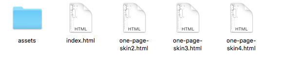

BitWallet
BitWallet - Cryptocurrency ICO Landing Page HTML Template
- created: 16 May 2018
- by: ModelTheme
- Support via ThemeForest: Take me there
- Support via Ticketing System: Take me there
-
BitWallet - Cryptocurrency ICO Landing Page HTML Template is a great design idea for cryptocurrency sellers to start a new website.
BitWallet is a Creative HTML Template In line with modern design, color fresh and dynamic. Creative Layout and Smart. Super Clear and Clean Layout! This is a great choice!
Overview
Before we start, lets take a look on the folder structure of the template. All template files are placed in the HTML folder.

Pages
Installation
This is an HTML Template and doesn't require instalation in the traditional meaning of the word. You only need to place the content (HTML files and the four folders) in your prefered web directory
How to change the SKIN COLOR
How to change the SKIN COLOR
Add main color hexa code in body as class (eg: skin_ffffff / where ffffff is the hexa code for White color)
NOTE: Get hexa color using this site: http://www.colorpicker.com/
Go to css/style.css and replace the colors at the exact class.
CSS Files and Structure
The template comes with several CSS (stylesheet) files grouped in the stylesheet folder:
- animate.css;
- cryptocoins.css;
- cryptocoins.tff;
- cryptocoins.woff;
- media-screens.css;
- owl.carousel.css;
- responsive.css;
- simple-line-icons.css;
- style-inline.css;
- style.css;
JavaScript
This template is heavily loaded with both custom JS functions and free jQuery plugins. All JS files are placed in a separate folder called "js". The list of files is as follows:
- cryptic-custom.js
- cryptic-plugins.js
- donut-chart.js
- jquery.js
FAQ - Frequent Asked Questions
1. How can I install the BitWallet Cryptocurrency ICO Landing Page HTML Template?
This is an HTML Template and doesn't require instalation in the traditional meaning of the word. You only need to place the content (HTML files and the four folders) in your prefered web directory
2. How to change the Skin color?
Add main color hexa code in body as class (eg: skin_ffffff / where ffffff is the hexa code for White color.Go to css/skin-colors/. Go to css/style.css and replace the colors at the exact class.
Support